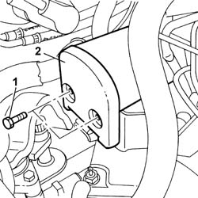
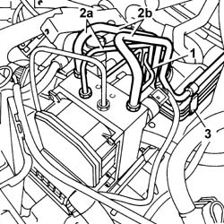
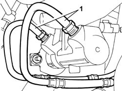
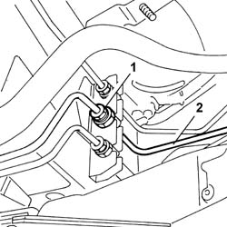
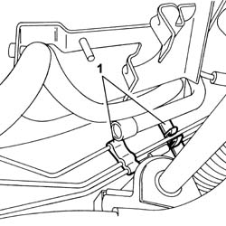

3340B62 REAR CONNECTION CENTRAL PIPE - R R
- Path
- Procedures > 33 BRAKES > 3340 ANTI-LOCK BRAKE SYSTEM (ABS) > 3340B ABS SYSTEM PIPES > 3340B62 REAR CONNECTION CENTRAL PIPE - R R
- Kind
- repair procedure (removal / refitting; the operation number is the code)
- Applies to
- all engines; all production periods
- Interactive page
- https://sloeber94.github.io/elrnDB-fUlss/en/#/179007331
Applies to: engines: 2.0 16V JTD, 2.2 16V JTD; all production periods
 Removing
Removing
 Refitting
RefittingOp. 5530B56 BATTERY DRIP TRAY COVER - R.R.
- Disconnect the negative battery terminal.
Applies to: engines: 2.2 16V JTD; all production periods
Op. 5010B18 CLIMATE CONTROL UNIT AIR INTAKE - R.R.
Op. 1048A10 AIR CLEANER FILTERING ELEMENT - REPLACE


Applies to: all engines; all production periods
1. Unscrew the connector on the electrohyraulic control unit
- Collect the coolant in a suitable container.
2. Undo connectors (2a) and (2b) to release the relevant pipe more effectively.
3. Use a suitable tool to cut the retaining bands and release the pipe.

Applies to: all engines; all production periods
1. Unscrew the master cylinder connectors.

Applies to: all engines; all production periods
- Collect the coolant in a suitable container.
- Raise the vehicle.
Applies to: all engines; all production periods
1. Unscrew the connector.
2. Disconnect the pipe from electrohydraulic control unit to intermediate connector.

Applies to: all engines; all production periods
1. Use a suitable tool to cut the lower retaining bands and release the pipe.

Applies to: all engines; all production periods
- Lower the vehicle.
- Release the pipe from intermediate connector to electrohydraulic control unit and remove.
Applies to: engines: 2.2 16V JTD; all production periods
Refitting
Removing- Fit the pipe from intermediate connector to electrohydraulic control unit and secure with fastenings.
- Tighten the connector on the electrohydraulic control unit to the specified torque.
 | Value - daNm | Fastening | Component | Ø |
|---|---|---|---|---|
. | 1,5 | Connector | PIPE CENTRAL RIGID BRAKING PIPE/REAR BRAKES | - |
- Connect the connectors on the remaining pipes and tighten to the specified torque.
| Value - daNm | Fastening | Component | Ø |
|---|---|---|---|---|
. | 1.5 | Connector | PIPE RIGID PUMP BRAKE PIPES/ABS CONTROL UNIT | - |
| Value - daNm | Fastening | Component | Ø |
|---|---|---|---|---|
. | 1.5 | Connector | PIPE RIGID FRONT BRAKE PIPE/ABS CONTROL UNIT | - |
- Fit the pipe from master cylinder and tighten the connectors to the specified torque.
| Value - daNm | Fastening | Component | Ø |
|---|---|---|---|---|
. | (Master cylinder) 1.5 | Connector | PIPE RIGID PUMP BRAKE PIPES/ABS CONTROL UNIT | - |
Applies to: engines: 2.0 16V JTD, 2.2 16V JTD; all production periods
Applies to: all engines; all production periods
- Raise the vehicle.
- Connect the pipe from electrohydraulic control unit to the intermediate connector and tighten the connector to the specified torque.
| Value - daNm | Fastening | Component | Ø |
|---|---|---|---|---|
. | 1,5 | Connector | PIPE CENTRAL RIGID BRAKING PIPE/REAR BRAKES | - |
Applies to: all engines; all production periods
Applies to: all engines; all production periods
Op. 0010T65 HYDRAULIC BRAKE SYSTEM BLEED AIR
Op. 0010T66 MANUAL GEARBOX OIL CHECK LEVEL AND TOP UP IF NECESSARY
- Remove the vehicle from the lift.
- Connect the negative battery terminal.
Op. 5530B56 BATTERY DRIP TRAY COVER - R.R.
- Check that the system is working.